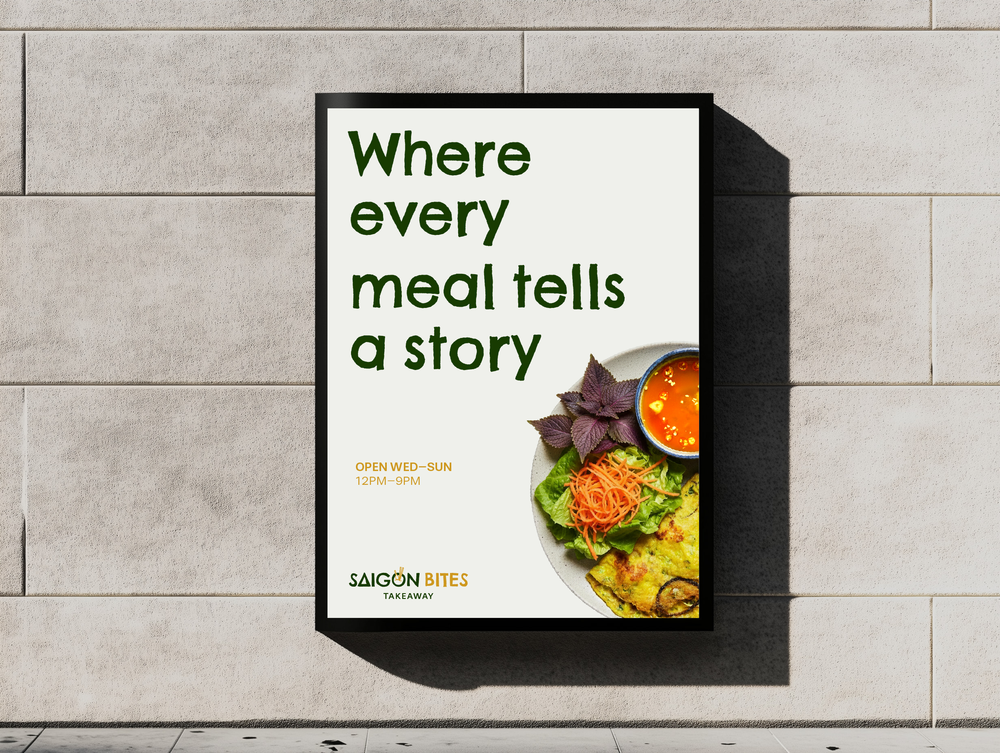
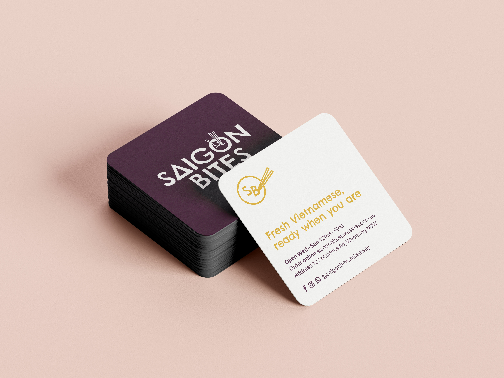
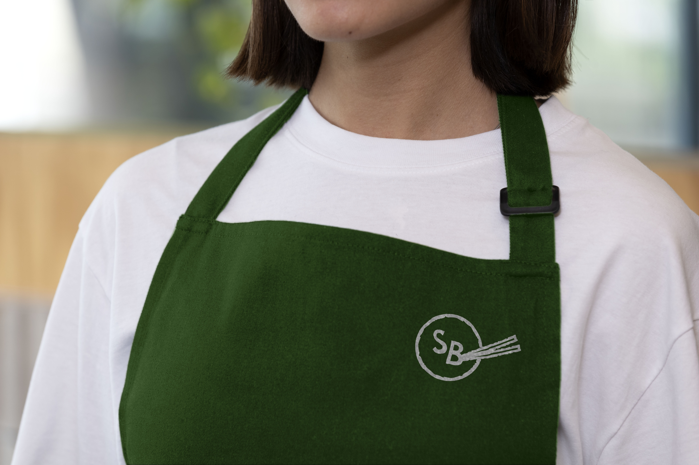
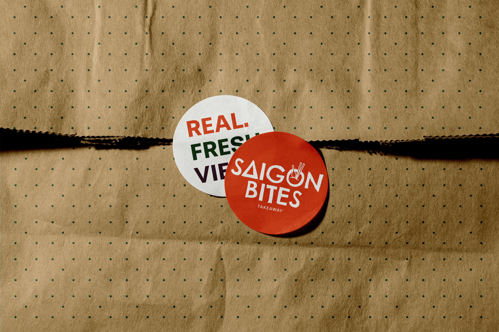

Brand · Web design · Motion
A Vietnamese takeaway serving authentic flavours to its local community. We built the brand identity and full web presence from the ground up — something warm and vibrant that reflects the food, and makes it effortless for customers to browse the menu and walk through the door.
The problem
Saigon Bites had great food and loyal regulars, but no brand or website to match — making it hard for new customers to discover them or trust what they'd find.
The solution
A vibrant identity built around the food itself — warm colour, an easy menu-first site, and motion that gives the takeaway the same energy in pixels as it has in person.
Brand collateral



